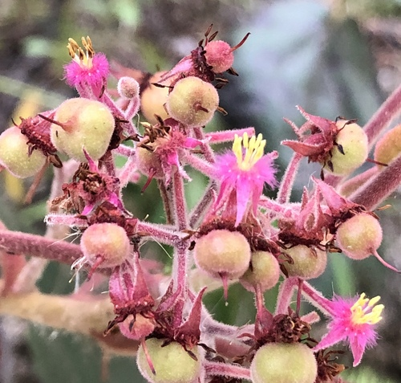

Petenaeaceae
The Petenaeaceae family is a small, relatively recently recognized family containing only a single species, Petenaea cordata. This species is a shrub or small tree native to southern Mexico and Central America (Guatemala, Belize). Its unique characteristics led to its placement in its own family within the order Huerteales.
Overview
The Petenaeaceae family is defined by its sole member, Petenaea cordata. This plant was previously placed in various families, including Elaeocarpaceae and Tiliaceae, or left unplaced due to its unusual combination of features. Molecular phylogenetic studies eventually clarified its position, leading to the establishment of the Petenaeaceae family in the APG IV system (2016).
Petenaea cordata is found in tropical forest habitats in its native range. Its most striking features are its large, heart-shaped leaves with prominent reddish veins and its dense clusters of small, bright pink to reddish flowers that lack petals but have numerous conspicuous stamens.
Due to its limited distribution and recent taxonomic recognition, the family has little known direct economic importance, but it holds significant botanical interest for understanding the evolutionary relationships within the order Huerteales and the broader Rosid clade.
Quick Facts
- Scientific Name: Petenaeaceae
- Common Name: (None widely established for the family)
- Number of Genera: 1
- Number of Species: 1 (Petenaea cordata)
- Distribution: Southern Mexico, Guatemala, Belize
- Evolutionary Group: Eudicots - Rosids - Huerteales
Key Characteristics
Growth Form and Habit
The single species, Petenaea cordata, is typically a shrub or small tree, reaching heights of up to 10 meters. It grows in moist, tropical forest environments.
Leaves
Leaves are simple, alternate, and large, with a distinctive cordate (heart-shaped) base and an acuminate (tapering to a point) apex. They are palmately veined, often with 5-7 prominent veins radiating from the base, which can be reddish in color. The leaf margins are typically serrated or dentate. Small stipules are present but may fall off early (caducous).
Inflorescence
Flowers are borne in dense, many-flowered axillary cymes or panicles. These clusters hang downwards and are quite conspicuous due to their color.
Flowers
The individual flowers are small but numerous and visually striking:
- Calyx: Consists of (4-)5 distinct, reflexed (bent backwards) sepals that are typically pink to reddish.
- Corolla: Petals are absent (apetalous).
- Androecium: Features numerous (typically 8-12) stamens with short filaments and relatively large, yellowish anthers, which are prominent against the reddish sepals.
- Gynoecium: A single superior ovary, typically composed of 4-5 fused carpels, with a simple style and stigma.
Fruits and Seeds
The fruit is a fleshy, berry-like drupe, often reddish or purplish when mature, containing several seeds. Details on seed dispersal mechanisms are not widely documented but likely involve animals attracted to the fleshy fruit.
Chemical Characteristics
Specific chemical profiles unique to Petenaeaceae are not extensively studied or widely reported compared to larger families. Further research may reveal characteristic secondary metabolites.
Field Identification
Identifying Petenaea cordata, the only member of Petenaeaceae, relies on recognizing its unique combination of vegetative and floral features within its specific geographic range (Southern Mexico, Guatemala, Belize):
Primary Identification Features
- Large, Cordate Leaves: Look for simple, alternate leaves with a distinct heart shape at the base and prominent palmate venation (often reddish).
- Dense Flower Clusters: Notice the hanging, dense clusters (cymes/panicles) of small flowers originating from the leaf axils.
- Apetalous Flowers with Colorful Sepals: The most defining floral feature is the absence of petals, combined with 4-5 pink/reddish, reflexed sepals and numerous (8-12) prominent stamens with yellow anthers.
- Shrub/Small Tree Habit: Found as an understory or mid-story plant in tropical forests.
Secondary Identification Features
- Leaf Margins: Check for serrated or toothed leaf edges.
- Stipules: Small stipules may be present at the base of the petiole, especially on younger growth.
- Berry-like Fruit: Look for small, fleshy, reddish/purplish drupes in clusters.
Seasonal Identification Tips
- Flowering Period: Typically flowers during the dry season or early rainy season, but this can vary locally. The conspicuous flower clusters are key during this time.
- Fruiting Period: Fruits develop following flowering.
- Year-round: The large, distinctive cordate leaves are present year-round, making vegetative identification possible.
Common Confusion Points
The unique combination of features (cordate leaves, apetalous flowers with colorful sepals and many stamens) makes it fairly distinct within its range. Confusion might arise with:
- Other species with large cordate leaves (e.g., some Malvaceae, Piperaceae), but floral characteristics will differ significantly. Always check for the characteristic apetalous flowers with numerous stamens.
Field Guide Quick Reference (Petenaea cordata)
Look For:
- Shrub or small tree habit
- Large, alternate, cordate leaves
- Prominent, often reddish palmate veins
- Dense axillary clusters of small flowers
- Petals absent
- 4-5 pink/reddish reflexed sepals
- 8-12 prominent stamens
- Superior ovary
- Berry-like drupe fruit
Key Distinctions:
- Unique combination of cordate leaves and apetalous flowers
- Flowers in dense cymes/panicles
- Specific geographic range (S. Mexico, Guat., Belize)
- Not to be confused with families having petals or different stamen/ovary arrangements
Notable Example
As a monotypic family, Petenaeaceae contains only one genus and one species:

Petenaea cordata
The sole representative of the family, this shrub or small tree is endemic to parts of southern Mexico and northern Central America. It is characterized by its large, heart-shaped leaves with prominent venation and dense clusters of small, apetalous (petal-less) flowers featuring bright pinkish-red sepals and numerous stamens. It typically grows in the understory of moist tropical forests.
Phylogeny and Classification
Petenaeaceae is placed within the order Huerteales, part of the Rosid clade of eudicots. The recognition of Petenaeaceae as a distinct family is relatively recent, formalized in the APG IV classification system (2016). Previously, Petenaea cordata had an uncertain taxonomic position due to its unique mix of characteristics.
Molecular data strongly support its placement within Huerteales, an order that also includes the families Dipentodontaceae, Gerrardinaceae, and Tapisciaceae. Huerteales itself is sister to either the nitrogen-fixing clade (Fabales, Rosales, Fagales, Cucurbitales) or the Malvids, depending on the specific analysis.
Position in Plant Phylogeny
- Kingdom: Plantae
- Clade: Angiosperms (Flowering plants)
- Clade: Eudicots
- Clade: Rosids
- Order: Huerteales
- Family: Petenaeaceae
Evolutionary Significance
The establishment of Petenaeaceae highlights the importance of molecular data in resolving difficult taxonomic placements. Its significance lies in:
- Representing a distinct lineage within the order Huerteales.
- Possessing a unique combination of morphological traits (e.g., apetalous flowers with numerous stamens, cordate leaves with palmate venation) that obscured its relationships based on morphology alone.
- Contributing to our understanding of the diversity and evolutionary history within the Rosid clade, particularly the relationships surrounding the Malvid and Fabid subclades.